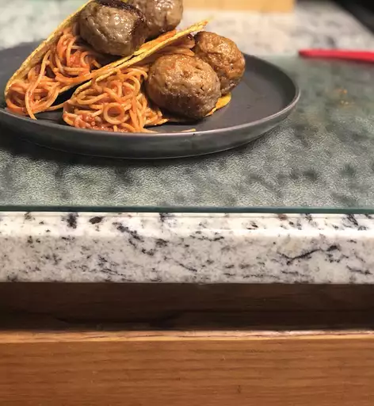

Spaguetti Tacos

Description
My kids wanted these spaghetti tacos after seeing them on one of their favorite TV shows.
They're very quick and easy to make.
Ingredients
- 1 (16 ounce) package angel hair pasta
- 1 (28 ounce) jar spaghetti sauce
- 12 crisp taco shells
- 1/4 cup grated Parmesan Cheese
Steps
- Bring a large pot of lightly salted water to a boil. Cook angel hair pasta in the boiling water, stirring occasionally, until tender yet firm to the bite, 4 to 5 minutes. Drain well.
- Return pasta to the pot. Pour in spaghetti sauce and mix thoroughly until reheated.
- Place taco shells onto a microwave-safe plate, then fan out into a circular shape so the edges of the taco shells overlap slightly. Microwave on high until warm and crisp, 30 to 45 seconds.
- Spoon pasta mixture into warm taco shells. Sprinkle about 1 teaspoon Parmesan cheese onto each taco.